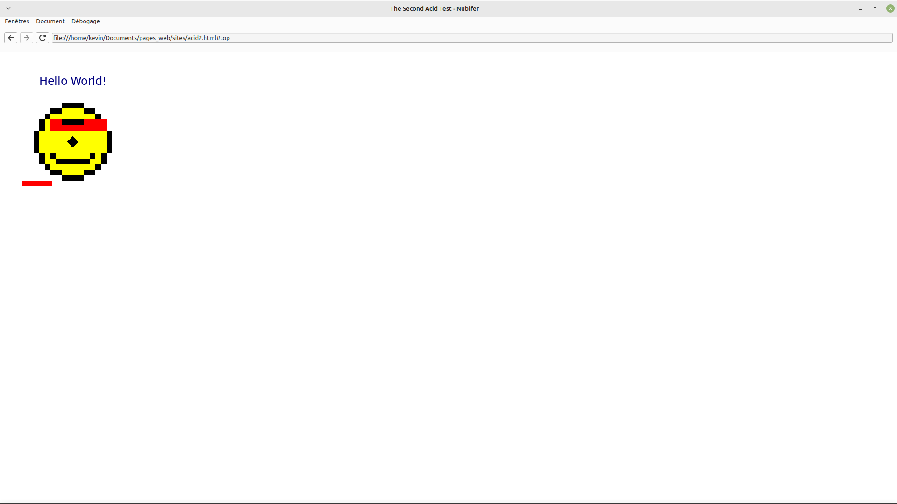

Nubifer (« qui apporte des nuages ») est un projet de navigateur web entièrement écrit dans mon langage de programmation Kuri.
Aucun cadre existant n'est utilisé : les moteurs HTML, JavaScript, et CSS sont fait maison.
Le navigateur n'est que dans son enfance (le développement ayant commencé en juillet 2024), et dès lors non utilisable. Mais nous pouvons déjà naviguer et afficher certaines pages. Il n'y a pas de support pour l'ouverture de plusieurs pages ou onglets, de marque-pages, etc. Le plus important pour le moment est d'afficher et d'interragir avec les pages correctement.
Le code source n'est pas encore disponible, car il dépend du langage de programmation qui ne l'est pas non plus.
Que ce soit pour HTML, CSS, et JavaScript, bon nombre de spécifications restent à implémenter.
Le parseur est toujours incomplet, mais basé sur HTML5.
Nous ne gérons que les requêtes "GET", bien qu'il soit possible d'entrer des informations dans des formulaire, on ne peut pas encore les poster.
Une attention particulière aux vecteurs de traçage (fingerprinting, etc.) devra être portée. Pour l'instant je n'ai pas fait un bon travail pour noter où ces choses peuvent survenir afin de les prévenir.
Les WebSocket sont déjà supportées, moyennant quelques bugs.
Le moteur est environ à la version CSS 2.1 avec un support plus ou moins partiel pour des nouvelles fonctionalités (telles que calc(), display flex)
Pour l'instant, l'exécution du code JavaScript se fait en traversant l'arbre syntaxique, ce qui est largement inefficient.
Un interpréteur utilisant du code binaire est également en développement, ce qui devrait drastiquement réduire les temps d'exécution, et est une étape vers une compilation à la volée vers des instructions natives, pour être directement exécuté par le processeur.
Le ramasse-miette est également inefficient car il utilise le système d'introspection du langage : les objets sont traversées grâce aux informations des types fournies par le compilateur. Dans le future, des fonctions dédiées pour chaque type seront générées lors de la compilation pour accélérer l'ébouage.
|
acid1 |
Mon navigateur est plus ou moins au même niveau que ceux de 1997. |
|
|
acid2 |
 |
Il reste 2 problèmes à régler avant de passer à l'an 2005.
|
|
Google (ancienne version) |
Vu le faible support pour JavaScript, je dois me contenter du vieux google (je ne sais pas si d'autres moteurs ont des pages simples). L'ordre de dessin fait que les liens en haut à gauche ne sont pas cliquable. Et aucune recherche ne peut être faite car les requêtes POST ne sont pas gérées. |
|
|
Reddit (ancienne version) |
Il y a plein de choses à faire. | |
|
Météo France |
meteofrance fait grand usage de display: flex, et fut essentiel dans l'implémentation de cette propriété. 'display: grid' est également utilisé pour les menu, ce sera la cible de développements prochains. Les glyphes manquant (visibles via les paires de carreaux vides) sont en fait des émojis qui ne sont pas supportés pour le moment. |
{kind=link}
{kind=link}
{kind=link}
{kind=link}
{kind=link}